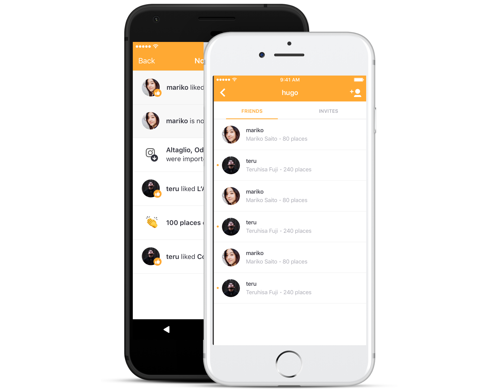
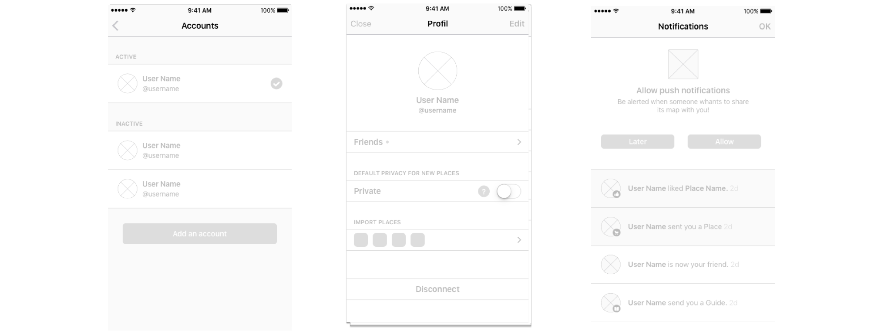
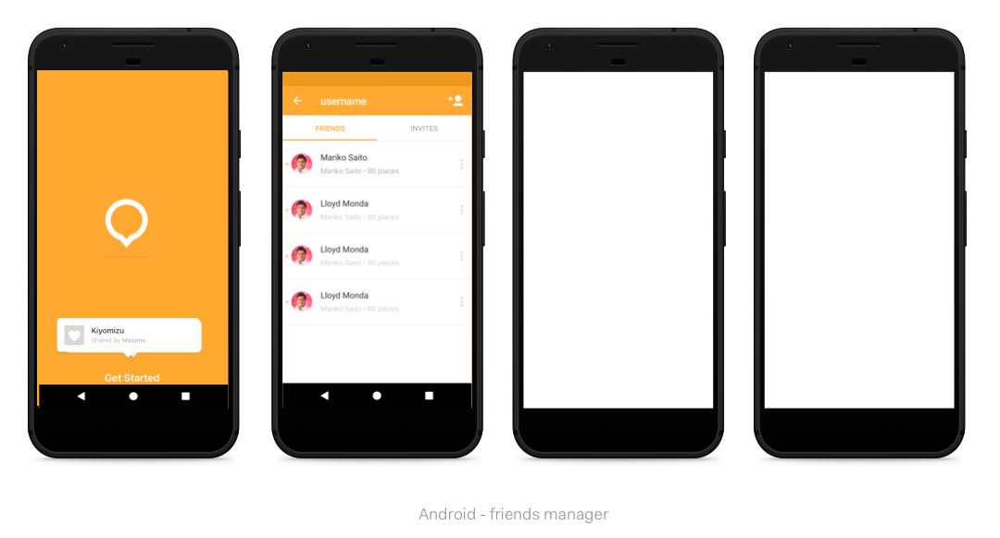

The Product Experience
Amongst every projects I was involved in, the most rewarding one was the design of the social experience. Allowing users interactions directly within the app was a major step for acquisition, as it was a core lever to our company's business growth.

So, based on research we first defined a user account model architecture. Then I was responsible for the complete UX, from the first run experience to the design, test phases and implementation of the profile features.
- First Run eX: Onboarding, signup process, markups…
- Profile: Friends manager, activity center, data backups,…
- Sharing: referral links
First run experience - Facebook signup flow and permission access

permission flow model
Early explorations
 
Collect useful data with cool technology to track, measure and solve problems.
Then, convert trusthworthy user insights into beautiful, useable, meaningful features. Implement.